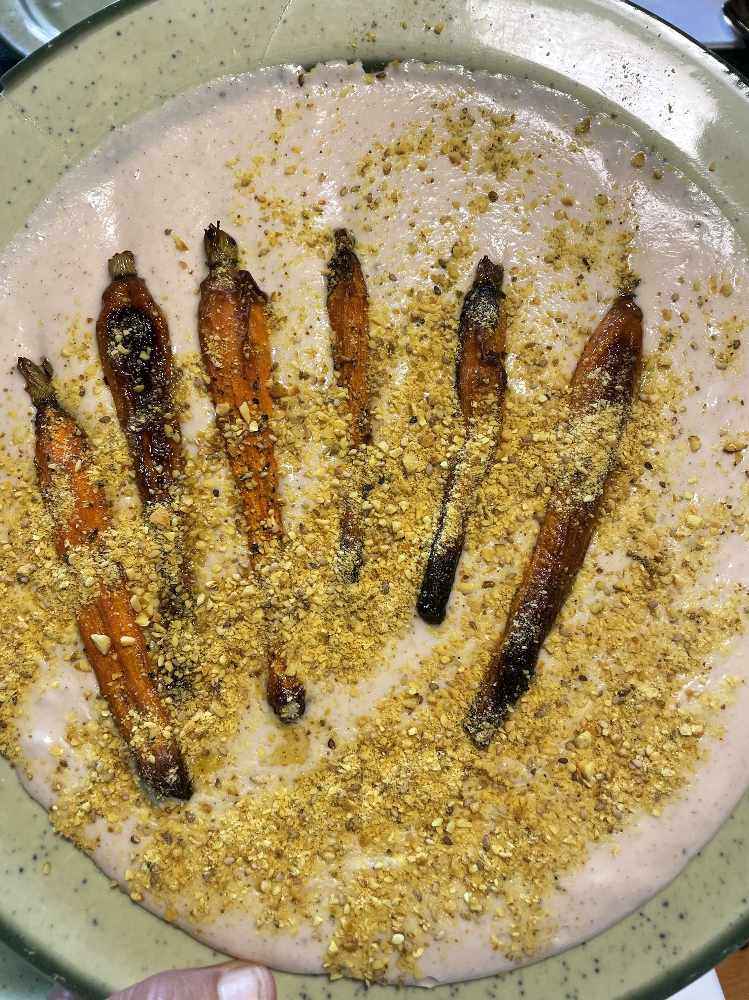

Zanahorias asadas sobre crema de alubias con dukkah
Ingredients
2×
- 8 zanahorias pequeñas
- aceite de oliva
- sal
- 400 g de alubias blancas cocidas
- 2 cdas de tahini
- zumo de limón
- 1 diente de ajo
- 3 cdas de dukkah

Preparación
Paso 1
Asar 8 zanahorias pequeñas enteras con aceite de oliva y sal 30min a 200ºC, hasta que se caramelicen.
Paso 2
Triturar 400 g de alubias blancas cocidas con 2 cdas de tahini, zumo de limón, 1 diente de ajo, aceite, sal y un poco de agua hasta tener una crema lisa.
Paso 3
Extender la crema en un plato, colocar encima las zanahorias y espolvorear con 3 cdas de dukkah.